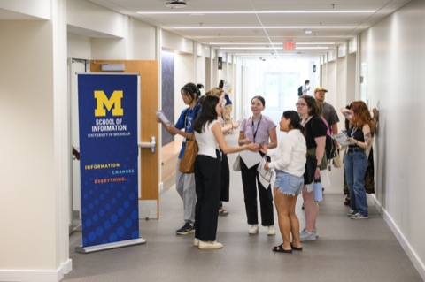
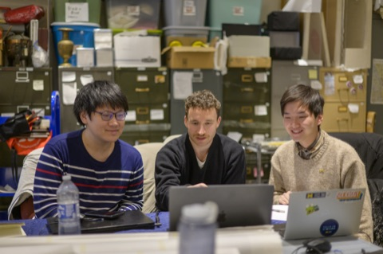
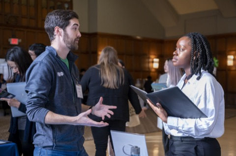
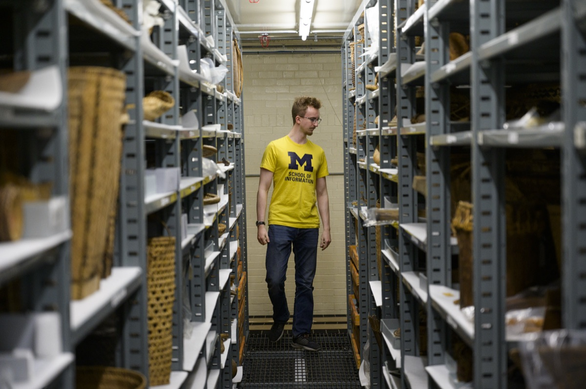

Build Skills. Work with Partners. Have an Impact.
The UMSI Engaged Learning Office connects students with opportunities to apply classroom knowledge to real challenges. Use this site to prepare for your experience, manage your work, and reflect on what you learned.

Watch how UMSI students work with real clients on real challenges.
Why Use This Resource?
Real-world projects rarely follow a perfect plan. This site helps you find the right guidance when you need it, so you can spend less time searching for materials and more time learning, collaborating, and moving your project forward.
- Follow a clear process: Move from preparation and project launch through active work, reflection, and responsible closeout.
- Find practical support: Access relevant templates, checklists, examples, and how-to guidance for common project needs.
- Build professional skills: Strengthen your communication, teamwork, project management, and ethical decision-making.
- Turn experience into evidence: Identify what you learned and communicate your impact in resumes, portfolios, and interviews.
Guidance for Every Stage
Engaged learning projects can change as new needs, constraints, and insights emerge. Find guidance for the stage of work you are navigating now.
-

Start Here
Set learning goals, understand the project context, examine your assumptions, define team roles, and establish a strong relationship with your partner.
Prepare for your experience -

Navigate the Experience
Use research methods to understand the people you work with, keep your partner updated, gather and respond to feedback, and work through ethical scenarios.
Find active project resources -

Wrap Up and Move Forward
Reflect on your growth and translate your work into resume, portfolio, and interview content.
Plan your next steps
Featured Programs
Explore opportunities to collaborate with organizations, communities, student teams, and partners in Michigan and beyond. Each program name links to its page on M-Compass, except Study Abroad, which links to the UMSI website.

-
AI Clinic Project Experience
Work with a team on an applied artificial intelligence project for a partner organization.
-
A2 Data Dive
Use information and data skills to help address challenges identified by community organizations.
-
Alternative Fall Break
Participate in a community-engaged learning experience during the University’s fall break.
-
Alternative Spring Break (ASB)
Collaborate with communities and nonprofit organizations on information-related projects during spring break.
-
Student Organization Engaged Learning Leaders
Develop leadership and project-management skills while supporting engaged learning through a UMSI student organization.
-
Study Abroad
Build intercultural awareness and apply your learning in an international setting.
About the Engaged Learning Office
The Engaged Learning Office works with partners across industries and sectors, from technology companies to grassroots nonprofits and cultural heritage institutions, to provide project-based opportunities for UMSI students.
Its mission is to facilitate transformational engaged learning experiences and enable innovative, sustainable, and mutually beneficial information solutions for local and global communities.
Stay Connected with ELO
Get updates about ELO programs, workshops, events, and opportunities through the regular newsletter.
Sign up for the ELO newsletter
Questions? Email umsi.engagement@umich.edu.